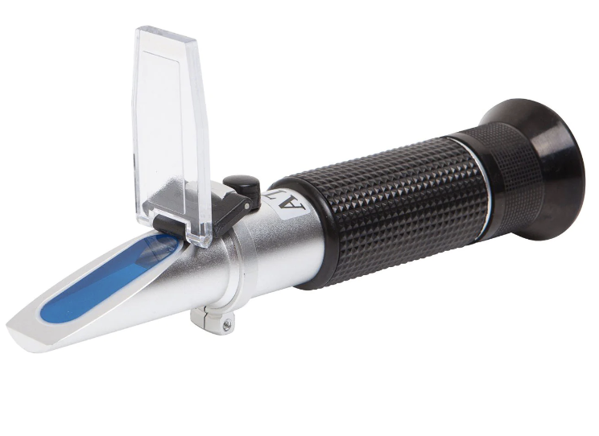

Getting Started
From the home kitchen to a production facility, there are some basic tools to assist in making repeatable, safe confectionery. Thermometers and Refractometers are a good beginning...
Laser Thermometer

- -50 to +380 deg C
- AUD $60 + GST
Refractometer

- 58% - 92% Brix
- AUD $110 +GST
Pen Style Digital Thermometer

- -50 to 300 deg C
- AUD $30 + GST
Digital Thermometer with Probe

- -50 to 300 deg C
- AUD $80 + GST
Wolf Machinery
Choccreator is proudly the Australasian Agent for Wolf Specialmachinery


Broquet Pumps
ChocCreator is proudly the Australasian Agent for Broquet Pumps
Over thirty years experience and a history of working with leading names in chocolate means Broquet pumps are a well-established name in this area.
The technology fulfills the main requirements when it comes to pumping chocolate, preventing any risk of burning or damaging the chocolate. Present in output systems from grinding mills, melting facilities or presses, used for draining conches, feeding pouring units or tempering machines, Broquet pumps have been designed to bring chocolate and candy makers as well as bakeries, the reliability needed to deliver exceptional results.

Depending on your application, specially designed rotors allow:
- High flowrate with low rotation speeds
- Allow solids such as nuts and fruit to go through without risk of grinding or blockage
- Prevents separation of dry and fat masses